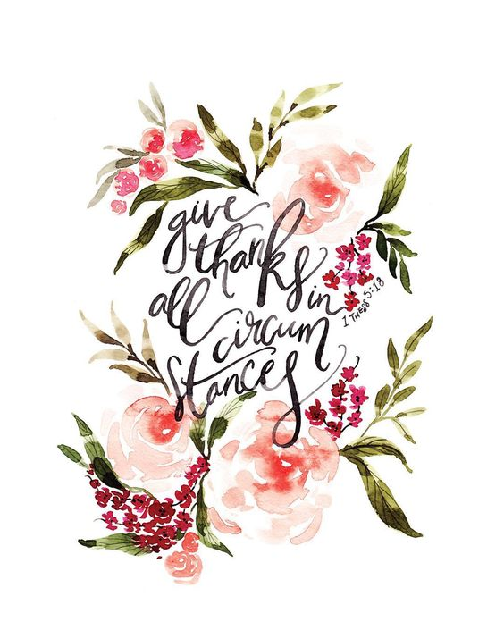

Morgan Leigh Britt
mlb61670@uga.edu

"ATTRACT what you expect, REFLECT what you desire, BECOME what you respect, MIRROR what you admire"
Hello! Welcome to my online "portfolio" Here's a little bit about me.
My name is Morgan Britt, and I am from the small town of Winder, Georgia. I have a passion for people, art, and THE DAWGS OF COURSE. I am a Intended Furnishing and Interiors Major within the Family and Consumer Sciences college here at the University of Georgia. My intended graduation date is in the Sring of 2020. To learn more about the program visit click here!
I graduated from a homeschool accredited program called Masters Academic Partners. In highschool, I deeply involved with athletics. Specifically, volleyball was my sport of choice. My homeschooling program allowed my to go outside of my comfort zone of athletics and try new things like art and drama. This is where I really found my desire to be and Interior Designer. Eventually, I hope to possibly add a second major in marketing. My dream is to be a freelance interior designer one day.
Being a freshman in college, I have little interior design experience. However, I do have work ethic and a hard working mindset. I have interned as a "social media marketer" for Brand and Britt Insurance Agency. With this, I was responsible for creating monthly newsletters, updating all social media platforms, and helping with booths at public events. Moreover, I have worked as a waitress at Hot Thomas BBQ for the past two years. While, it may not be the most "glamorous" job, it taught me some of the most valuable life lessons and work ethic. In addition, I have worked for a local church in the nursery on weekday mornings. This helped me create relationships with like-minded people. Lastly, I serve on the executive council as the Recordiong Secretary for my sorority, Zeta Tau Alpha here on campus. Although, I have worked in many different Job areas, I believe each of these has helped me get to where I am; in one way or another.
My current schedule is as follows:
| Class | Days | Times |
|---|---|---|
| Computer Science (CSCI1101) | Monday/Wednesday | 2:30-3:20 |
| Intro to Statistics (STAT2000) | Tuesday/Thursday | 12:30-1:45 |
| Fashion Merchandising (TXMI3200) | Tuesday/Thursday | 2:00-3:15 |
| FACS2000 | Tuesday | 3:30-4:45 |
- Leadership
- Volleyball Team Captain (2014-2015)
- 5th Grade Small Group Leader (2012-2014)
- Zeta Tau Alpha Gamma Pi Recording Secretary (2016-2017)
- Additional Skills
- Working with deadlines
- Thinking outside the box
- Organization
- Problem-Solving
- Self Motivated
- Open-Minded
- Awards and Recognitions
- All Area 1st Team & All Star(2015)
- Area Volleyball Team Honorable Mention (2013)
- Most Valuable Freshman(2013)
- Honor Student (2012-2015)
Just Some Fun Facts...
One of My favorite poems by B.J. Morbitzer
To believe is to know that
every day is a new beginning.
Is to trust that miracles happen,
and dreams really do come true.
To believe is to see angels
dancing among the clouds,
To know the wonder of a stardust sky
and the wisdom of the man in the moon.
To believe is to know the value of a nurturing heart,
The innocence of a child's eyes
and the beauty of an aging hand,
for it is through their teachings we learn to love.
To believe is to find the strength
and courage that lies within us
When it's time to pick up
the pieces and begin again.
To believe is to know
we are not alone,
That life is a gift
and this is our time to cherish it.
To believe is to know
that wonderful surprises are just
waiting to happen,
And all our hopes and dreams are within reach.
If only we believe.
QUIZ: What is my favorite class this semester?!!!: